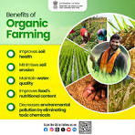
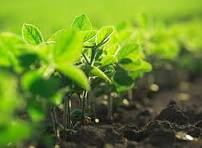
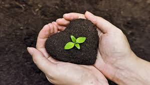
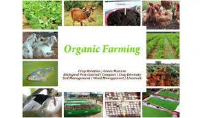
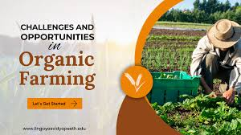
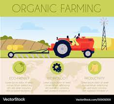

Organic Farming – Community Engagement Project
Empowering communities through sustainable agriculture practices
Welcome to Our Organic Farming Initiative
This project aims to educate and inspire communities about the benefits and practices of organic farming. Through hands-on experiments, interactive quizzes, and comprehensive resources, we're building awareness about sustainable agriculture and its impact on health and environment.
🌱 Education
Learn about organic farming principles and practices
🔬 Experiments
Hands-on plant growth experiments and organic solutions
🤝 Community
Engage with like-minded individuals and share knowledge
Our Organic Farming Gallery

Soil Health

Green Growth

Eco-friendly Farming

Sustainable Practices

Organic Farming Techniques

Modern Organic Farming